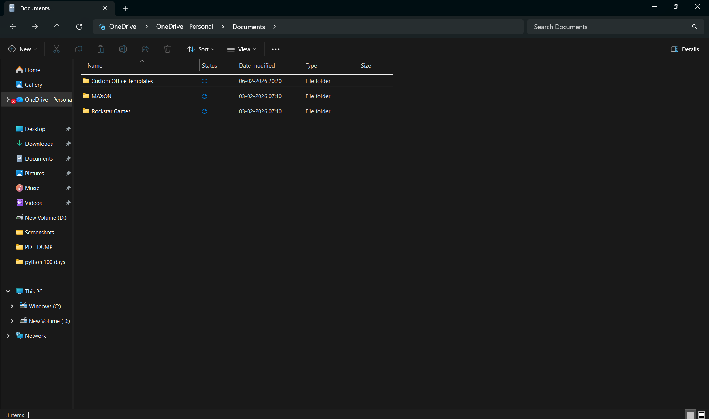

1. Figure & Figcaption
The <figure> element wraps self-contained content like images, diagrams,
or code snippets. The <figcaption> provides a visible caption, which is
better for accessibility than relying only on the alt attribute.

Key Differences: alt vs figcaption
| Attribute / Element | Visible to User? | Purpose |
|---|---|---|
alt |
No (only when image fails to load) | Screen readers & broken-image fallback — accessibility & SEO |
<figcaption> |
Yes — always visible | Descriptive caption for the user — attribution, context, source |
2. Video Element
The <video> element embeds video directly in the browser — no plugin needed.
It supports multiple <source> elements so the browser picks the format it supports.
<video width="640" height="360" controls poster="thumbnail.jpg">
<source src="video.mp4" type="video/mp4">
<source src="video.webm" type="video/webm">
<p>Your browser does not support HTML5 video.
<a href="video.mp4">Download the video</a> instead.</p>
</video>Important Video Attributes
| Attribute | Description |
|---|---|
controls |
Shows play/pause/volume controls |
autoplay |
Starts playing immediately (must pair with muted in most browsers) |
muted |
Mutes audio by default |
loop |
Restarts video when it ends |
poster |
Image shown before video plays (like a thumbnail) |
preload |
auto / metadata / none — hints for the browser |
width / height |
Dimensions in pixels |
3. Audio Element
The <audio> element embeds sound clips. Like <video>,
it accepts multiple <source> child elements.
<audio controls>
<source src="sound.mp3" type="audio/mpeg">
<source src="sound.ogg" type="audio/ogg">
<p>Your browser does not support the audio element.</p>
</audio>Common Audio Attributes
controls— displays the audio player UIautoplay— plays on load (use with caution — bad UX)loop— loops the audiomuted— starts with muted audiopreload="auto"— preloads the audio file
Supported Audio Formats
| Format | MIME Type | Notes |
|---|---|---|
| MP3 | audio/mpeg |
Most widely supported, good compression |
| OGG | audio/ogg |
Open format, supported in Firefox & Chrome |
| WAV | audio/wav |
Uncompressed, very large file size — use for short clips |
| AAC | audio/aac |
Apple's format, good quality at low bitrates |
4. Inline Frames (<iframe>)
The <iframe> element embeds another webpage inside the current page.
Commonly used for embedding YouTube videos, Google Maps, or social media widgets.
<!-- Embedding a YouTube video -->
<iframe
width="560"
height="315"
src="https://www.youtube.com/embed/VIDEO_ID"
title="YouTube video player"
frameborder="0"
allow="accelerometer; autoplay; clipboard-write; encrypted-media; gyroscope; picture-in-picture"
allowfullscreen>
</iframe>iframe Security Considerations
- Always add a
titleattribute for screen reader accessibility. - Use
sandboxattribute to restrict embedded content capabilities. - Be cautious embedding third-party sites — they can pose XSS risks.
- Some sites block being embedded via the
X-Frame-OptionsHTTP header.
5. Key Takeaways on HTML Media
- Use
<figure>+<figcaption>instead of bare<img>when an image needs a descriptive caption. - Always provide a fallback message inside
<video>and<audio>for browsers that don't support the element. - Offer multiple
<source>formats (e.g., MP4 + WebM) to maximize browser compatibility. - Never use
autoplaywithoutmuted— browsers block auto-playing audio by default. - Every
<iframe>must have atitleattribute for accessibility. - Lazy loading (
loading="lazy") can be applied to both<img>and<iframe>to improve page performance.